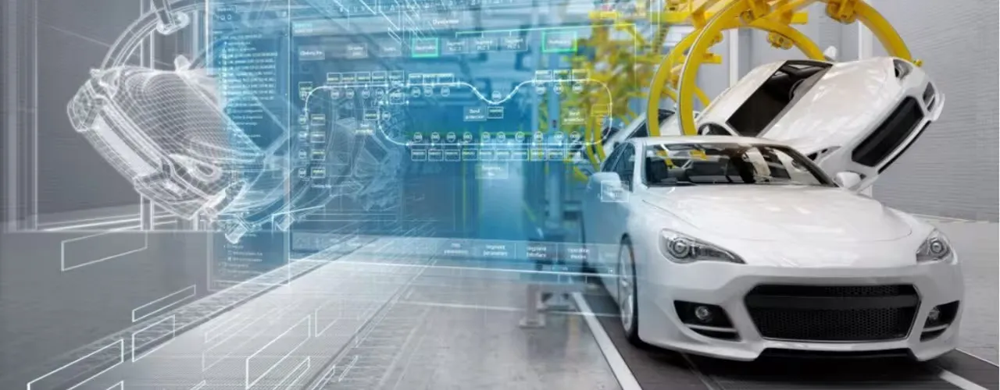

About the Client
A Tier-1 automotive supplier, producing chassis systems for multiple vehicle models. The client needed to improve inspection accuracy across chassis variants with differing bracket configurations—without increasing manual effort or compromising assembly line efficiency.
The Challenge
Due to frequent changes in chassis design and the presence of multiple bracket configurations, the client faced a high risk of missed welds or incorrect assembly. Manual inspection was slow, inconsistent, and prone to errors—leading to potential assembly stoppages, rework, and quality issues.
Key challenges included:
- Variant-driven complexity in bracket positions and count
- Lack of automation for visual inspection of welded subassemblies
- Increased risk of production downtime due to missed parts
- Need for a fast, repeatable, and fully integrated inspection solution
The Solution
We developed and deployed eVision, a proprietary AI-powered computer vision system designed to automate inspection with high repeatability and accuracy.
Key solution components included:
- AI-based visual inspection system designed to detect presence or absence of welded brackets
- Robotic camera mount positioned to scan child parts on chassis frames
- PLC integration for real-time feedback and control signal exchange with production equipment
- Rigorous testing phase to validate detection accuracy under variable lighting and part orientation
- Deployment across production lines, with training and calibration for variant flexibility
- Continuous feedback loop established to refine detection algorithms and minimize false positives
The Impact
The eVision system delivered significant operational and quality benefits: